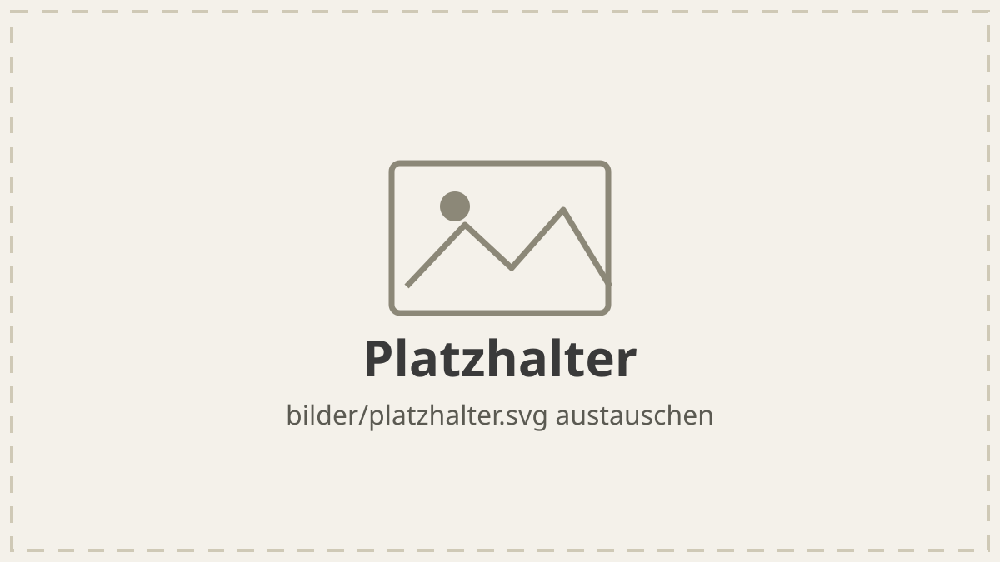

Kampagne Name eintragen · Zeitraum
Was dabei herausgekommen ist
Ein Überblick auf einem Bildschirm, für alle, die nicht dabei waren: worum es ging, was gemacht wurde, was dabei herauskam und was als Nächstes ansteht.
Das Wichtigste in einem Satz
Hier steht der eine Satz, den jemand nach dem Lesen weitererzählen soll.
Die Zahlen
Drei Zahlen reichen. Zu jeder gehört, woher sie kommt, sonst ist die erste Rückfrage genau die.
-
Zahl
Reichweite
-
Zahl
Klicks
-
Zahl
Kosten je Kontakt
Die Beschriftungen sind Beispiele. Nimm die Kennzahlen, über die ihr wirklich sprecht, und schreib dazu, woher sie stammen: Quelle eintragen.
Was gemacht wurde
Drei bis fünf Punkte, je ein Gedanke. Wer nur die Aufzählung liest, soll den Ablauf trotzdem verstehen.
- Kanal oder Maßnahme — in einem Satz, was dort lief.
- Kanal oder Maßnahme — mit dem Zeitraum, wenn er wichtig ist.
- Kanal oder Maßnahme — und was daran anders war als geplant.

bilder/. Tausch die Datei aus oder lösch diesen Abschnitt. Der Pfad bleibt relativ, sonst bleibt das Bild beim Empfänger leer. Jedes Bild, das etwas aussagt, braucht einen alt-Text.Was wir daraus mitnehmen
- Eine Erkenntnis — und was sie beim nächsten Mal ändert.
- Eine Erkenntnis — auch wenn sie unbequem ist. Genau die wird sonst zweimal gemacht.
Wie es weitergeht
Ein bis zwei Sätze: Was ist der nächste Schritt, bis wann, und wer macht ihn. Wenn du etwas zurückbekommen willst, schreib hin, was und bis wann — Rückmeldung bis TT.MM.
Die Adresse steht in index.html im href dieses Links: vorname.nachname@example.com. Ein Mail-Link ist ohne Server die ehrliche Lösung — ein Formular hätte hier niemanden, der es entgegennimmt.